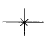
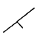
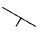
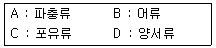
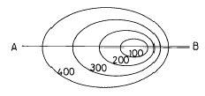
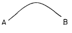
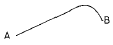
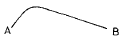
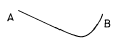

화약취급기능사 (2002-04-07 기출문제)
1과목: 화약 및 발파
1. 공업 뇌관용 뇌홍 폭분의 풀민산 수은(Ⅱ) (Hg(ONC)2)와 염소산칼륨(KClO3)의 배합비율은?
- 94 : 6
- 80 : 20
- 20 : 80
- 6 : 94
(정답률: 알수없음)

2. 다음중 혼합화약류에 속하지 않는 것은?
- T.N.T
- 흑색화약
- 질산암모늄폭약
- 카알릿
(정답률: 알수없음)
3. 다음중 구리뇌관과 관계가 깊은 것은?
- Pb(N3)2
- NH4NO3
- Hg(ONC)2
- KNO3
(정답률: 알수없음)
4. 충격파의 발생에 대한 설명중 잘못된 것은?
- 충격파란 매질중을 탄성파 속도보다 빠른속도로 전달되는 파를 말한다,
- 충격파에는 순간반응파와 지연반응파가 있다.
- 충격원에서 에너지를 받은후 진행하는 동안 다른에너지를 더이상 흡수하지않는 경우를 비반응성 충격파라 한다.
- 순간적인 폭발반응으로 초고속(5000-12000m/sec)의 파를 발생시키는 경우를 폭굉파라 한다.
(정답률: 알수없음)
5. 화약류의 안정도 시험방법에 속하는 것은?
- 마찰시험
- 순폭시험
- 가열시험
- 낙추시험
(정답률: 알수없음)
6. 다음 설명 중 옳은 것은?
- 둔성폭약시험은 폭약의 감도를 측정하는 시험이다.
- 탄동진자시험은 폭약의 안정도를 측정하는 시험이다.
- 납판시험은 뇌관의 성능을 측정하는 시험이다.
- 내열시험은 폭약의 일한 효과를 측정하는 시험이다.
(정답률: 알수없음)
7. 심발법중 경사공 심빼기가 아닌 것은?
- 부채살 심빼기
- V형 심빼기
- 피라미드 심빼기
- 코로만트 심빼기
(정답률: 알수없음)
8. 흙의 전단강도를 감소시키는 요인과 거리가 먼 것은?
- 공극수압의 증가
- 팽창에 의한 균열
- 흙의 다짐의 불충분
- 흙의 굴착에 의한 일부제거
(정답률: 알수없음)
9. 전색을 함으로써 발파에 미치는 영향을 가장 올바르게 설명한 것은?
- 외부와의 공기차단으로 폭연이 많이 발생한다.
- 충격파를 증대시켜 폭음을 크게한다.
- 불발을 방지해준다.
- 가스나 탄진에 점화될 위험을 적게한다.
(정답률: 82%)
10. 구멍지름 32㎜, 폭약비중 1.6이고 장약길이를 구멍지름의 10배로 하였을때 약실체적은 얼마인가?
- 411.57cm3
- 4⑤.25cm3
- 325.57cm3
- 257.23cm3
(정답률: 알수없음)
11. 직교하는 2자유면 발파에 있어 암석계수 0.01인 암체에다 공경 40mm, 장약길이를 공경의 12배로 했을 때 최소저항선은 얼마인가?
- 약 64cm
- 약 148cm
- 약 185cm
- 약 196cm
(정답률: 30%)
12. 다음 중 자연분해가 가장 잘 일어나는 화약류는?
- 니트로글리세린(N/G)
- 니트로셀루로오즈(N/C)
- 질산전분
- 니트로만니트
(정답률: 알수없음)
13. 다음은 화약류의 사용목적에 따른 혼합성분이다. 틀린것은?
- 감열소염제 - 식염
- 안정제 - 헥소겐
- 발열제 - 규소철
- 예감제 - DNN
(정답률: 알수없음)
14. 화약류의 용어에 관한 설명이다. 다음 설명중 틀린것은?
- 폭굉이란 폭발반응이 맹렬하여 음속보다 큰 것을 말한다.
- 폭발속도란 폭속이라고도 하며, 폭발반응이 진행되는 속도를 말한다.
- 순폭이란 하나의 폭약이 폭연했을때 다른 폭약이 감응하여 폭발을 일으키는 현상을 말한다.
- 폭발이란 화약류의 안정상태가 파괴될 때에 일어나는 화학변화를 말한다.
(정답률: 알수없음)
15. 고화된 폭약을 그대로 사용해서는 안되는 이유중 가장 옳은 것은?
- 장전이 곤란하다.
- 장전중에 폭발한다.
- 폭발력이 강해지고, 습기의 흡습이 쉽다.
- 불발이나 잔류약을 생기게 하기 쉽다.
(정답률: 알수없음)
16. 천공 작업과 발파 효과에 대한 설명이다. 다음중 틀린 것은?
- 천공 능률은 구멍의 지름이 작을수록 높아진다.
- 발파공이 단일 자유면에 직각일 경우 발파 효과가 최소로 된다.
- 폭약의 지름이 작으면 폭속이 증가한다.
- 폭약지름에 비해 천공구멍 지름이 너무 크지 않은 편이 좋다.
(정답률: 알수없음)
17. 암반의 공학적 분류방법인 큐-시스템(Q-system)에 의하여 암반을 평가할 때 중요한 요소가 아닌 것은?
- 암질지수
- 절리면의 상태
- 절리군의 수
- 불연속면의 방향
(정답률: 알수없음)
18. 발파이론에서 충격파란?
- 강도가 큰 암석의 내부에 타격을 주는 것.
- 강도가 작은 변성암의 내부에 탄성파를 전해주는 것.
- 매질 속을 탄성파 속도보다도 빠르게 전달되는 파를 말한다.
- 수성암의 파괴에만 관계되는 탄성파
(정답률: 알수없음)
19. 동시에 모든 발파공을 발파하는 방법은?
- 제발발파법
- 지발발파법
- 단발발파법
- 확저발파법
(정답률: 알수없음)
20. 누두공 시험발파 결과 장약량이 2.0kg일 때 누두지수가 1.5가 되어 과장약이 되었다. 최소저항선을 동일하게 하였을 때의 표준장약량은 몇 kg으로 하여야 하는가? (단, 누두지수가 1.5일 때의 누두지수 함수의 값은 2.69이다.)
- 0.543kg
- 0.643kg
- 0.743kg
- 0.843kg
(정답률: 알수없음)
2과목: 화약류 안전관리 관계 법규
21. 다음 사항은 쿠션 블라아스팅법(Cushion blasting)에 대한 특징이다. 내용이 틀린 것은?
- 라인드릴링법 보다 천공간격이 좁아 천공비가 적게 든다.
- 견고하지 않은 암반의 경우나 이방성 암반에도 적용하기 쉽다.
- 천공안의 약포의 배열이 어려워 지하 암반발파시 적용이 곤란하다.
- 지표면에서 경사또는 수직공의 경우에도 사용 될 수있다.
(정답률: 알수없음)
22. 발파작업의 3요소가 아닌 것은?
- 착암
- 전색
- 발파
- 쇄석운반
(정답률: 알수없음)
23. 2자유면 발파에서 벤치커트(Bench cut)를 실시하고자 한다. 아래와 같은 조건일 때 장약량은 얼마인가 ? (단, 최소저항선:2m, 천공간격;2m,벤치높이:3m,발파계수:0.15)
- 1.8kg
- 4.⑤Kg
- 24Kg
- 36Kg
(정답률: 50%)
24. 천공발파시 최소저항선을 90㎝, 장약장을 30㎝로 하려고 한다. 이때 적당한 천공장은 얼마인가?
- 140㎝
- 130㎝
- 1⑤㎝
- 90㎝
(정답률: 알수없음)
25. 발파작업에서 천공에 대한 저항성은 (①)에 크게 관계되고 발파할때의 저항성은 (②)에 크게 관계된다. ( )안에 알맞은 답은?
- ① 인성 ② 경도
- ① 경도 ② 인성
- ① 인성 ② 전성
- ① 연성 ② 경도
(정답률: 알수없음)
26. 화약류 저장소의 저장방법 및 취급 방법중 틀린 것은?
- 경계울타리 안에는 필요없는 사람의 출입을 금지할것.
- 저장소 안에는 실내화등 안전성 있는 신을 신도록 할것.
- 저장소 안쪽벽으로 부터 30cm 띄우고 높이는 2m이하로 저장할 것.
- 무연화약 또는 다이나마이트를 저장하는 경우는 온도계를 장치할 것.
(정답률: 알수없음)
27. 다음 중 화약류 일시 저치장이라 하는 것은?
- 화약류의 판매업소에서 화약류를 일시적으로 저장하는 장소.
- 화약류의 제조과정에서 화약류를 일시적으로 저장하는 장소.
- 화약류의 제조업자가 완제품의 화약류를 일시적으로 저장하는 장소.
- 화약류의 수입업자가 화약류를 일시적으로 저장하는 장소.
(정답률: 알수없음)
28. 전기발파의 경우 전선에는 몇 암페어 이상의 전류가 흐르도록 하여야 하는가?
- 3암페어 이상
- 2암페어 이상
- 1암페어 이상
- 4암페어 이상
(정답률: 알수없음)
29. 피뢰침 및 가공지선의 각 부분은 피보호 건물로 부터 몇m 이상의 거리를 두어야 하는가? (단,규칙상 최소거리 이상임)
- 4.5
- 1.5
- 3.5
- 2.5
(정답률: 알수없음)
30. 화약류 판매업자의 장부는 그 기입을 완료한 날로부터 몇 년간 보존해야 하는가?
- 1년
- 2년
- 3년
- 5년
(정답률: 알수없음)
31. 화약류 저장소와 보안물건간의 보안거리 측정은?
- 저장소의 토제 내벽으로부터 보안물건 까지의 거리
- 저장소의 내벽으로부터 보안물건 까지의 거리
- 저장소의 토제 외벽으로부터 보안물건 까지의 거리
- 저장소의 외벽으로부터 보안물건 까지의 거리
(정답률: 알수없음)
32. 화약류 저장소에 폭약 40톤을 저장하는 경우 지반의 두께기준으로서 옳은 것은 ? (단, 지하1급 저장소임)
- 21.0m 이상
- 24.0m 이상
- 29.0m 이상
- 26.0m 이상
(정답률: 알수없음)
33. 간이저장소에 "폭약"을 저장하고자 한다. 최대저장량이 맞는 것은?
- 30㎏
- 15㎏
- 10㎏
- 5㎏
(정답률: 60%)
34. 쏘아올리는 꽃불류의 사용은 누구의 책임하에 하여야 하는가?
- 현장소장
- 사용허가신청자
- 관할파출소직원
- 화약류관리보안책임자
(정답률: 알수없음)
35. 선박의 항로 또는 계류소는 몇 종 보안물건에 해당 하는 가?
- 1종
- 2종
- 3종
- 4종
(정답률: 알수없음)
36. SiO2의 양이 45%보다 적게 포함된것을 말하는 것은?
- 산성암
- 중성암
- 염기성암
- 초염기성암
(정답률: 알수없음)
37. 한개의 큰 광물중에 다른 종류의 작은 결정들이 다수 불규칙 하게 들어있는 석리(조직)는?
- 반상석리(조직)
- 문상석리(조직)
- 취반상석리(조직)
- 포이킬리틱석리(조직)
(정답률: 알수없음)
38. 구과상 구조는 어떤 암석에서 가장 많이 볼 수 있는가?
- 염기성 분출암
- 중성 분출암
- 산성 분출암
- 염기성 심성암
(정답률: 알수없음)
39. 현무암에서 가장 흔하게 볼 수 있는 절리는?
- 수평절리
- 판상절리
- 방상절리
- 주상절리
(정답률: 알수없음)
40. 현정질이며 완정질인 광물의 입자로 구성된 화성암의 조직을 무엇이라 하는가?
- 입상조직
- 유리질조직
- 반상조직
- 행인상조직
(정답률: 알수없음)
3과목: 암석 및 지질
41. 셰일이 광역 변성작용을 받아 생성되는 암석의 순서로 맞는 것은?
- 슬레이트 - 천매암 - 편암 - 편마암
- 슬레이트 - 편암 - 편마암 - 천매암
- 슬레이트 - 편마암 - 편암 - 천매암
- 슬레이트 - 편암 - 천매암 - 편마암
(정답률: 50%)
42. 셰일이 강한 변성작용을 받아 재결정 작용이 일어난 암석으로 편리가 발달되며, 편리 방향으로 운모, 녹니석 등이 배열되어 있는 암석은?
- 규암
- 편암
- 대리암
- 응회암
(정답률: 알수없음)
43. 화강암이 열수의 작용을 받으면 석영과 백운모만으로 된 암석으로 변한다. 이를 무슨 암 이라고 하는가?
- 규회석
- 혼펠스
- 영운암
- 공정석
(정답률: 알수없음)
44. 절리의 분류중 힘에 의한 절리와 관계가 먼 것은?
- 전단절리
- 신장절리
- 주상절리
- 장력절리
(정답률: 알수없음)
45. 다음중 고생대에 속하는 것은?
- 제3계
- 대동계
- 상원계
- 조선계
(정답률: 알수없음)
46. 지질도상에 주향과 경사가 수평인 지층의 경우에 해당되는 것은?



(정답률: 알수없음)
47. 다음 광물중 경도(굳기)가 가장 큰 광물은?
- 석고
- 석영
- 형석
- 인회석
(정답률: 알수없음)
48. 화성암 중에서 SiO2의 함유량이 52-66%의 암석은?
- 초염기성암
- 중성암
- 산성암
- 염기성암
(정답률: 알수없음)
49. 지표에 나타난 심성암체의 면적이 200Km2이하이면 무엇이라 하는가?
- 병반
- 암경
- 암주
- 암상
(정답률: 알수없음)
50. 화성암을 분류하는 기준은 ( a )의 성분비와 산출상태에 따라 나타내는 ( b )에 의하여 결정된다. 위( )속의 a와 b로 옳은 것은? (순서대로 a, b)
- MgO 구조
- CaO 반점
- FeO 압력
- SiO2 조직
(정답률: 알수없음)
51. 유색광물을 거의 포함하지 않은 화강암을 무슨 화강암이라 부르는가?
- 구상화강암
- 반상화강암
- 세립질화강암
- 우백질화강암
(정답률: 알수없음)
52. 변성암과 그 변성암에서 특징적으로 나타나는 변성구조와의 연결이 옳지 못한 것은?
- 편마암 - 편마구조
- 편암 - 편리구조
- 점판암 - 벽개구조
- 대리암 - 안구상구조
(정답률: 알수없음)
53. 파쇄작용을 받아 형성된 변성암만으로 짝지어진 것은?
- 안구상 편마암, 압쇄암
- 대리암, 규암
- 규암, 압쇄암
- 혼펠스, 천매암
(정답률: 알수없음)
54. 광역변성작용에 의하여 생성된 암석들의 특징은?
- 구성광물들이 일정한 방향으로 배열된다.
- 구성광물들이 방향성을 가지지 못한다.
- 구성광물들이 불규칙 방향을 배열한다.
- 구성광물들이 방향성을 잃어버린다.
(정답률: 알수없음)
55. 아래의 척추동물을 그 발생의 시대순으로 오래된 것부터 나열한 것은?

- A - B - C - D
- D - C - B - A
- B - D - A - C
- C - D - A - B
(정답률: 알수없음)
56. 횡압력을 받은 단단한 지층사이에 약한 지층에 끼어 있으면 약한 지층에만 소규모 습곡이 생기는데 이것을 무엇이라 하는가?
- 단사구조
- 복향사
- 요곡
- 드랙습곡
(정답률: 알수없음)
57. 한국의 지질계통중 가장 늦게 이루어진 것은?
- 상원계
- 조선계
- 평안계
- 제3계
(정답률: 알수없음)
58. 경사된 단층면에서 상반이 위로 올라간 단층으로 주로 압축력의 작용으로 생긴 단층은?
- 수직단층
- 계단단층
- 역단층
- 사교단층
(정답률: 알수없음)
59. 우리나라에서 화산 활동이 가장 활발하게 일어났던 시기는?
- 신생대 제4기
- 중생대 백악기
- 고생대 페름기
- 원생대
(정답률: 37%)
60. 다음 평면도와 같은 지형을 AB로 자른 단면도는?





(정답률: 알수없음)
수은(Ⅱ)와 염소산칼륨을 혼합하여 만들어진 공업 뇌관용 뇌홍은 폭발성이 높은 물질이기 때문에, 안전한 사용을 위해 정확한 배합비율이 필요하다.
이 문제에서는 정답이 "80 : 20"이다. 이유는 다음과 같다.
공업 뇌관용 뇌홍은 수은(Ⅱ)와 염소산칼륨을 혼합하여 만들어진다. 이때, 수은(Ⅱ)와 염소산칼륨의 배합비율이 중요하다.
수은(Ⅱ)와 염소산칼륨을 혼합하여 만들어진 공업 뇌관용 뇌홍은 폭발성이 높은 물질이기 때문에, 안전한 사용을 위해 정확한 배합비율이 필요하다.
이 문제에서는 수은(Ⅱ)와 염소산칼륨의 배합비율을 구하는 것이므로, 수은(Ⅱ)와 염소산칼륨의 몰 비율을 구해야 한다.
수은(Ⅱ)의 분자식은 Hg(ONC)2이고, 염소산칼륨의 분자식은 KClO3이다.
먼저, 수은(Ⅱ)의 몰 질량을 구해보자.
Hg(ONC)2의 몰 질량 = 200.59 g/mol
다음으로, 염소산칼륨의 몰 질량을 구해보자.
KClO3의 몰 질량 = 122.55 g/mol
이제, 수은(Ⅱ)와 염소산칼륨의 몰 비율을 구해보자.
수은(Ⅱ)의 몰 비율 = (200.59 g/mol) / (200.59 g/mol + 122.55 g/mol) ≈ 0.62
염소산칼륨의 몰 비율 = (122.55 g/mol) / (200.59 g/mol + 122.55 g/mol) ≈ 0.38
따라서, 수은(Ⅱ)와 염소산칼륨의 배합비율은 약 62 : 38이다.
하지만, 이 문제에서는 보기 중에서 정답이 "80 : 20"이므로, 이에 해당하는 배합비율을 구해야 한다.
"80 : 20"의 비율을 분수로 나타내면 4 : 1이다.
따라서, 수은(Ⅱ)와 염소산칼륨의 배합비율은 4 : 1로 설정해야 한다.
수은(Ⅱ)와 염소산칼륨의 몰 비율을 4 : 1로 설정하면,
수은(Ⅱ)의 몰 비율 = 4 / (4 + 1) = 0.8
염소산칼륨의 몰 비율 = 1 / (4 + 1) = 0.2
따라서, 수은(Ⅱ)와 염소산칼륨의 배합비율은 80 : 20이다.